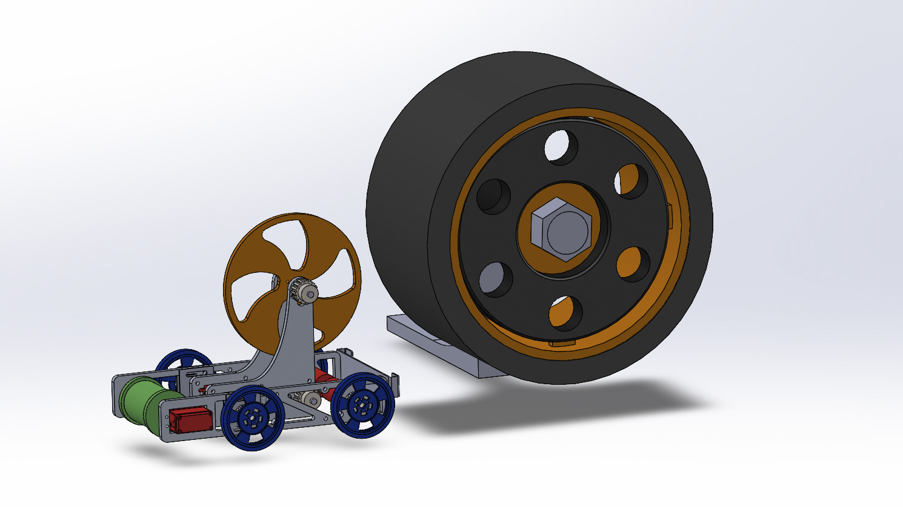
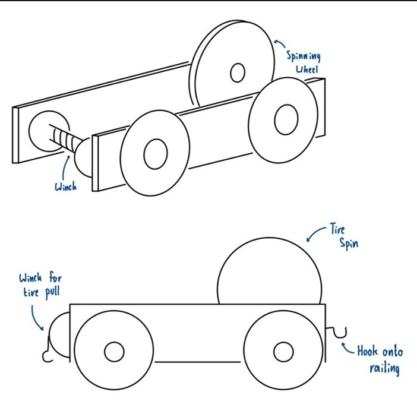
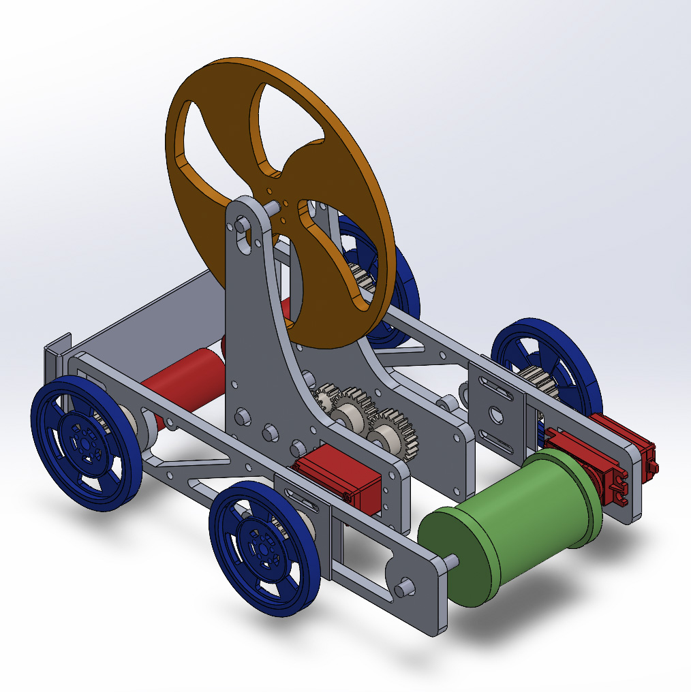

Mechanical Design | Robotics
Eugene
Eugene is a remote-controlled vehicle capable of pulling a 16 pound tire up to 8 feet using a winch. Guido is also equipped with a flywheel for spinning tires.

Competition Overview
The 2026 MIT 'F007: Design to Survive' was an individual competition organized by the Department of Mechanical Engineering as part of the class 2.007: Design and Manufacturing I. The 2026 interation included various point-scoring opportunities inspired by Formula 1.
Eugene was designed to obtain the tire-pull multiplier, which required a tire to be pulled further into the competitor's zone to earn a point multiplier. The further into the competitor's zone the tire was, the higher the multiplier. Eugene also has a large flywheel that is able to spin the back tire of the model Formula 1 cars for additional points.

Strategy
The regulations allowed for several robots to operate at once. My strategy, therefore, became to build one remote-controlled robot, Eugene, and a fully autonomous robot, Guido, controlled with the provided Arduino Mega board.
Design Requirements
- Maximum Volume of 12" x 12" x 16"
- Maximum Weight of 12 pounds
- Maximum Stored Energy of 50 kJ
Design Process
- Free-Body Diagrams, Sketches, Cardboard Prototypes
- CAD Renderings or Robot and Competiton Setup
- Hardware Fabrication: Mill, Lathe, Power Tools, Water Jet, and CO2 Laser


Testing
The majority of testing focused on becoming skilled at driving the robot around the gameboard and being able to quickly hook the winch to the tire and attach to the back railing of the gameboard to complete the tire pull.
The flywheel mechanism was also tested but left as a secondary point-scoring opportunity.
Results
Eugenio was able to pull the tire the maximum required length of 8 feet in just under 90 seconds.
The flywheel had variable success in spinning the tire of the 4 model cars due to variations between each setup.
Conclusions
Eugenio served as an integral part of my strategy for maximizing points earned during the competition. However, given that I decided to manufacture 2 complete robots, Eugenio had to be very lightweight and small to compensate for Guido's share of the volume and weight constraints. Nonetheless, even with these increased restrictions, Eugenio met my expectations as a fundamental part of my competition strategy.